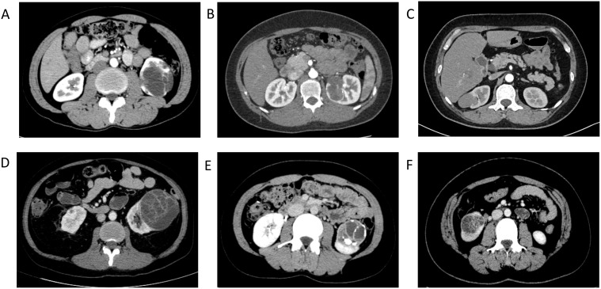

Ficha del catálogo
Quiste renal complejo
- Sistema
- Urinario
- Modalidad
- TC
- Región
- Riñón
- Dificultad
- Avanzado
Se denomina así a la lesión renal de contenido predominantemente líquido que presenta tabiques, calcificaciones, paredes engrosadas, contenido denso o nódulos murales. El objetivo del estudio es estimar la probabilidad de malignidad para decidir entre alta, seguimiento o cirugía, ya que una parte de estas lesiones corresponde a carcinoma renal quístico de comportamiento indolente.
Técnica
La tomografía con fase simple y fase nefrográfica permite medir la atenuación antes y después del contraste y detectar realce verdadero en tabiques o nódulos. La resonancia con secuencias potenciadas en T2, en T1 con saturación grasa y estudio dinámico con sustracción es más sensible para tabiques finos y para contenido hemorrágico. El ultrasonido con contraste también demuestra el realce de tabiques con excelente resolución temporal.
Qué observar
- Número, grosor y regularidad de los tabiques internos
- Grosor y contorno de la pared de la lesión
- Calcificaciones y su morfología, fina o gruesa y nodular
- Presencia de nódulos murales con realce
- Atenuación del contenido en la fase simple
- Realce verdadero medido entre la fase simple y la fase con contraste
Hallazgos
Las lesiones de bajo riesgo muestran pocos tabiques finos, calcificaciones delicadas y ausencia de realce medible. A medida que aumenta el número y el grosor de los tabiques, aparece realce en ellos y la pared se engruesa de forma irregular, la probabilidad de malignidad crece. La presencia de un nódulo sólido que realza dentro de la lesión indica una probabilidad muy alta de carcinoma y obliga a tratamiento.
Perlas
El dato que más pesa no es el número de tabiques sino la demostración de realce verdadero. Un quiste hiperdenso homogéneo, pequeño y sin realce corresponde casi siempre a contenido proteináceo o hemorrágico benigno, mientras que cualquier componente que capte contraste cambia por completo la categoría y la conducta.
Diagnóstico diferencial
- Quiste renal simple
- Es anecoico o de densidad agua, de pared imperceptible, sin tabiques y sin realce alguno.
- Carcinoma renal quístico
- Presenta tabiques gruesos e irregulares o nódulos murales con realce inequívoco tras el contraste.
- Absceso renal en resolución
- Se acompaña de contexto clínico infeccioso y cambia claramente en controles a corto plazo.
- Quiste hidatídico
- Muestra vesículas hijas y membranas desprendidas en su interior, con serología y contexto epidemiológico compatibles.
Simuladores
- Pseudorrealce de quistes pequeños rodeados de parénquima que realza intensamente
- Artefacto de volumen parcial que simula pared engrosada en lesiones menores de un centímetro
- Quiste hemorrágico denso que aparenta lesión sólida en fase única
Por modalidad
- TC
- Permite medir con precisión la atenuación en fase simple y el realce, y valora mejor las calcificaciones.
- US
- Distingue el quiste simple del complejo, detecta tabiques y, con contraste ecográfico, demuestra su vascularización.
Protocolo
Tomografía renal con fase simple y fase nefrográfica alrededor de los 90 segundos, con cortes de 2 a 3 milímetros y medición de la atenuación con la misma región de interés en ambas fases. En caso de duda se recurre a la resonancia con estudio dinámico y sustracción o al ultrasonido con contraste. Se recomienda mantener la misma técnica en los controles para poder comparar.
Clasificación
La clasificación de Bosniak agrupa estas lesiones en categorías de riesgo creciente, desde el quiste simple sin rasgos preocupantes hasta la lesión con componente sólido que realza. Las categorías intermedias se destinan a seguimiento por imagen y las superiores a resección, ya que la proporción de malignidad aumenta de manera progresiva con la categoría.
Errores frecuentes
- Medir el realce con regiones de interés de distinto tamaño o posición entre fases
- Categorizar una lesión con un único estudio con contraste sin fase simple de referencia
- Considerar maligna una lesión solo por tener calcificaciones gruesas sin realce asociado

quiste complejo Bosniak realce tabiques masa renal quística seguimiento riñón